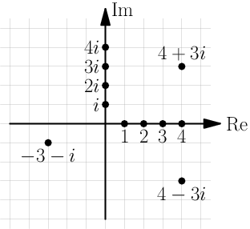
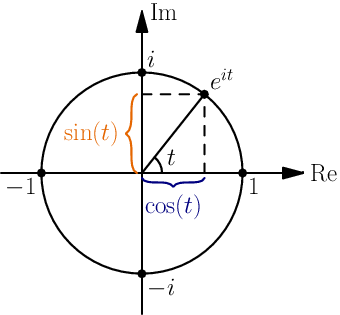
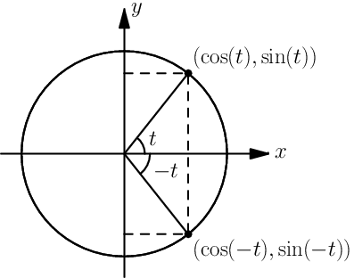
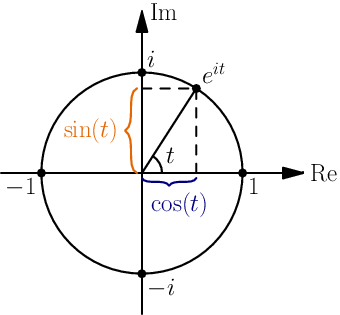

Euler's Formula¶
In this chapter you'll learn the most amazing math thing I have seen.
Be sure to learn radians, sin, cos, derivatives, e and Taylor polynomials before reading this chapter. That's lots of stuff to learn, but this chapter is definitely worth the effort. For best results, you should ideally have a look at proofs or other justifications of everything except definitions (e.g. you know how $\sin$ is defined in a unit circle and you have read the sin derivative proof).
With all that out of the way, this chapter will blow up your mind. Proceed at your own risk.
Imaginary Numbers¶
In the basics section I said that you cannot do things like $\sqrt{-1}$, but now we'll do that.
$$\begin{align} i = \sqrt{-1} \end{align}$$So if you do $i^2$ you get $\left(\sqrt{-1}\ \right)^2=-1$. Obviously this weird "number" is not between $-\infty$ and $\infty$ because no number in that range behaves like this. It's something else, and the $i$ is short for imaginary. The numbers between $-\infty$ and $\infty$ are known as real numbers, but $-\infty$ and $\infty$ are not real because they behave very differently than real numbers.
A complex number is something real plus something imaginary, and they are often represented in a 2D plane. Like this:

Re is short for Real and Im for Imaginary.
Note how the words "imaginary" and "complex" reflect people's attitudes to these numbers. At first they were considered nonsense, but nowadays there are many uses for complex numbers. This tutorial focuses on a very important way to use them.
The Magic¶
Let's calculate some powers of $i$. We'll need them later.
$$\begin{align} i^1 &= i \\ i^2 &= -1 \\ i^3 &= (-1)i = -i \\ i^4 &= (-1)(-1) = 1 \\ i^5 &= i^4i^1=1i = i \\ i^6 &= i^4i^2=1(-1)=-1 \\ i^7 &= i^4i^3=1(-i)=-i \\ i^8 &= i^4i^4=1 \cdot 1 = 1 \\ ... \end{align}$$We can see a pattern.
In the Taylor chapter we created these kinda-mind-blowing series representations:
$$\begin{align} \sin(x) &= x - \frac{x^3}{3!} + \frac{x^5}{5!} - \frac{x^7}{7!} + \frac{x^9}{9!} - ... \\ \cos(x) &= 1 - \frac{x^2}{2!} + \frac{x^4}{4!} - \frac{x^6}{6!} + \frac{x^8}{8!} - ... \\ e^x &= 1 + x + \frac{x^2}{2!} + \frac{x^3}{3!} + \frac{x^4}{4!} + ... \end{align}$$Let's try to calculate $e^{it}$ where $t$ is a real number and let the magic happen.
$$\begin{align} e^{it} &= 1 + it + \frac{(it)^2}{2!} + \frac{(it)^3}{3!} + \frac{(it)^4}{4!} + \frac{(it)^5}{5!} + \frac{(it)^6}{6!} + ... \\ &= 1 + it + \frac{i^2t^2}{2!} + \frac{i^3t^3}{3!} + \frac{i^4t^4}{4!} + \frac{i^5t^5}{5!} + \frac{i^6t^6}{6!} + ... \\ &= 1 + it + \frac{(-1)t^2}{2!} + \frac{(-1)it^3}{3!} + \frac{1t^4}{4!} + \frac{it^5}{5!} + \frac{(-1)t^6}{6!} + ... \\ &= 1 + it - \frac{t^2}{2!} - i\frac{t^3}{3!} + \frac{t^4}{4!} + i\frac{t^5}{5!} - \frac{t^6}{6!} + ... \\ &= \left(1 - \frac{t^2}{2!} + \frac{t^4}{4!} - \frac{t^6}{6!} + ...\right) + \left(it - i\frac{t^3}{3!} + i\frac{t^5}{5!} - i\frac{t^7}{7!} + ...\right) \\ &= \left(1 - \frac{t^2}{2!} + \frac{t^4}{4!} - \frac{t^6}{6!} + ...\right) + i \left(t - \frac{t^3}{3!} + \frac{t^5}{5!} - \frac{t^7}{7!} + ...\right) \\ &= \cos(t) + i \sin(t) \end{align}$$Boom. Can you believe that. We started with $e$ which we got out of exponentials and derivatives and the $i$, but we ended up with trig functions that are defined in a unit circle!
This is crazness is known as Euler's formula. Speaking of Euler, he's known for many many other math things as well, and I find it really amazing how much awesome math stuff he did. Even things like the $f(x)$ notation with parentheses and the concept of a function are from him.
After all the amazement, let's have a look at what we got. We know that $\cos$ is the $x$ coordinate and $\sin$ is the $y$ coordinate in a unit circle (see this thing), and a moment ago we drew a $(\text{Re}, \text{Im})$-plane. Actually the formula represents a unit circle in $(\text{Re}, \text{Im})$ plane!

Just looking at the above drawing, everything else makes sense perfectly except the $e^{it}$ label. It's just crazy.
Example: Trig Identities¶
Let's draw another unit circle with angles $t$ and $-t$. The things in parentheses are $(x,y)$ coordinates.

The black dots are aligned horizontally so $x$ coordinates are the same and $\cos(t)=\cos(-t)$. But the $y$ coordinates are opposite, so $\sin(-t)=-\sin(t)$. These work with any $t$.
Let's plug some stuff to Euler's formula and use these trig things:
$$\begin{align} e^{it} &= \cos(t) + i\sin(t) \\ e^{-it} &= \cos(-t) + i\sin(-t) \\ &= \cos(t)-i\sin(t) \end{align}$$$$\begin{align} e^{it}+e^{-it} &= (\cos(t)+i\sin(t)) + (\cos(t)-i\sin(t)) \\ &= \cos(t)+i\sin(t)+\cos(t)-i\sin(t) \\ &= 2\cos(t) \\ \frac{e^{it}+e^{-it}}{2}&=\cos(t) \end{align}$$Now your mind should be really blown up.
$$\begin{align} e^{it}-e^{-it} &= (\cos(t)+i\sin(t)) - (\cos(t)-i\sin(t)) \\ &= \cos(t)+i\sin(t)-\cos(t)+i\sin(t) \\ &= 2i\sin(t) \\ \frac{e^{it}-e^{-it}}{2i} &= \sin(t) \end{align}$$Handy thing: $a^2-b^2=(a-b)(a+b)$
Proof:
$$\begin{align} & \ (a-b)(a+b) \\ =&\ (a-b)a+(a-b)b \\ =&\ aa-ba+ab-bb \\ =&\ a^2 - b^2 \end{align}$$In this case we need to plug in $a=e^{it}$ and $b=e^{-it}$.
Equally head-exploding.
For example, let's try to find another way to represent $\sin(2t)$:
$$\begin{align} \sin(2t) &= \frac{e^{2it}-e^{-2it}}{2i} \\ &= \frac{(e^{it})^2-(e^{-it})^2}{2i} \\ &= \frac{(e^{it}-e^{-it})(e^{it}+e^{-it})}{2i} \\ &= 2 \cdot \frac{e^{it}-e^{-it}}{2i} \cdot \frac{e^{it}+e^{-it}}{2} \\ &= 2 \sin(t) \cos(t) \end{align}$$This is just the tip of the iceberg. It's possible to find dozens of handy-dandy trig equations like this. Most trig things can be proved without Euler's formula, but this magic way can be much easier and faster.
Exercise
This is a true story. A friend of mine had watched a youtube video that used this formula, and he wanted to see a proof of it:
$$\begin{align} \tan(2t)=\frac{2\tan(t)}{1-\tan^2(t)} \end{align}$$Here $\tan^2(t)$ means $(\tan(t))^2$, and people use the $\tan^2$ notation because it's easier and faster to write although it doesn't make much sense. Prove the above formula.
There are many ways to do this and the way I managed to do it is really long compared to e.g. Wikipedia's proof. If you want to try to do it like I did, prove these things in this order:
- $(a+b)^2=a^2+2ab+b^2$
- $\displaystyle\cos^2(t)=\frac{1+\cos(2t)}{2}$
- $(a-b)^2=a^2-2ab+b^2$
- $\displaystyle\sin^2(t)=\frac{1-\cos(2t)}{2}$
- $\displaystyle\cos(2t)=\cos^2(t)-\sin^2(t)$
Then I used the $\displaystyle\tan(2t)=\frac{\sin(2t)}{\cos(2t)}$ thing we learned here and the $\sin(2t)=2\sin(t)\cos(t)$ thing that we proved above.
Example: Famous Constants¶

If we plug in $t=\tau=2\pi$ we get this:
$$\begin{align} e^{i\tau} = \cos(\tau) + i \sin(\tau) = 1 + i \cdot 0 = 1 \end{align}$$This makes sense because if we start at 1 and rotate a full turn ($\tau$ radians), we get back to where we started.
But if we don't rotate at all we also end up at 1:
$$\begin{align} e^{i \cdot 0} = e^0 = 1 \end{align}$$Equations like $e^{it}=1$ have an infinite number of solutions because any number of full turns produces the 1, just like any number of full turns is a solution of $\cos(t)=1$.
We could also plug in $t=\frac \tau 2=\pi$ to go a half turn and end up at $-1$, and we get a very famous equation:
$$\begin{align} e^{i \pi} = -1 \end{align}$$